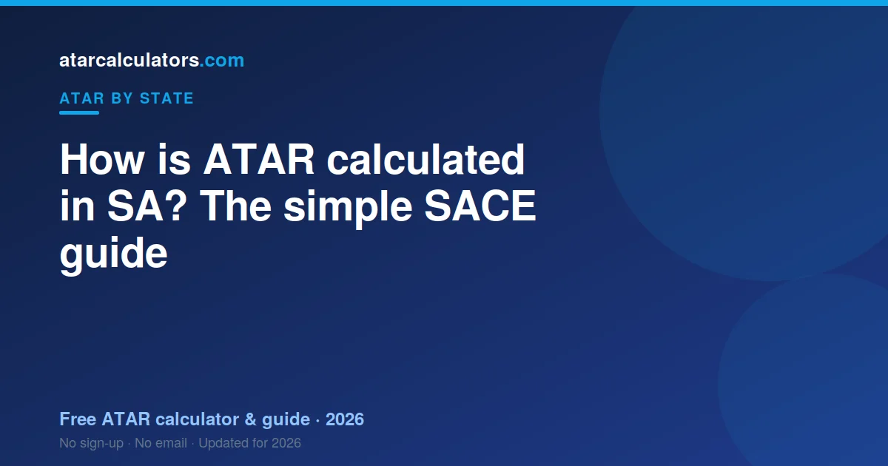
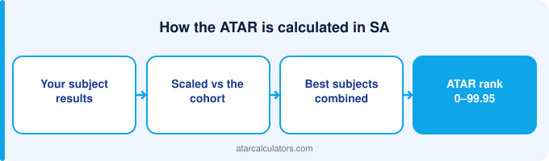

In South Australia, your ATAR is built from your scaled SACE Stage 2 results. SATAC takes your best three scaled scores and adds a flexible option to form a university aggregate, out of 90. It then ranks that aggregate against your age group and turns it into an ATAR between 0.00 and 99.95. You also need to complete your SACE to receive an ATAR at all.
Key takeaways
- Your ATAR is a rank from 0.00 to 99.95. It is not an average of your marks.
- It comes from your best three scaled Stage 2 scores, plus a flexible option.
- Together these form a university aggregate out of 90.
- SATAC scales your scores and works out your ATAR. The SACE Board runs the SACE.
- You must complete your SACE to receive an ATAR.
- The same ATAR is used by universities across Australia, not just in SA.
- SA’s main universities are now Adelaide University and Flinders University.

An ATAR is a rank, not a mark
Your ATAR is a rank. It shows where you sit compared to other students your age in SA. It is not the average of your marks.
Think of it as a line-up. Every student your age stands in a line, from lowest to highest. Your ATAR shows your spot in that line. An ATAR of 90.00 means you are near the top, ahead of about 90% of your age group.
The scale runs from 0.00 to 99.95, in steps of 0.05. The lowest number normally reported is 30.00. Anything under that shows as ‘less than 30’.
Because it is a rank, two students with the same marks can still land in different spots. Scaling and subject choice both play a part. You can try our SA ATAR calculator to see an estimate for your own subjects.
What SACE is and how you qualify
SACE stands for the South Australian Certificate of Education. It is the certificate you earn across Year 11 and Year 12. The SACE Board runs it.
To complete your SACE, you need to meet several requirements. You must pass enough Stage 1 and Stage 2 subjects. You also complete the Research Project and meet literacy and numeracy requirements.
SACE and your ATAR are not the same thing. You can complete SACE without an ATAR. But to get an ATAR, you need to study enough Tertiary Admission Subjects at Stage 2, with the exams and assessments that come with them.
How your university aggregate is built
Your South Australian aggregate is your best three scaled Stage 2 scores in full plus half of a fourth — the 0.5 rule. It runs out of 90, the smallest aggregate scale in the country.
A simple worked example
Work the example with South Australian numbers: three subjects in full, one at half, out of 90. With so few results, moving one visibly moves the total.
How SATAC scaling works
Scaling keeps things fair between subjects. A score of 15 in one subject is not always as hard to earn as 15 in another. Scaling adjusts for that.
SATAC scales each subject by looking at the whole group who took it. If a subject is full of high-achieving students, it tends to scale up. If a subject has a weaker overall group, it can scale down.
This is about the group, not you alone. You do not get scaled up just for picking a ‘hard’ subject. You get a fair score based on how your subject group performed across all their subjects.
So chasing an ‘easy’ subject can backfire. The smarter move is to do well in subjects you are strong in. See our guide to the best scaling subjects in SA for how this plays out.
Courses and prerequisites you need
To count, subjects must be Stage 2 and you need 90 credits at that level. The Research Project is compulsory for the SACE regardless of your aggregate.
Who does what: the SACE Board, SATAC and your school
Three groups play a part in your ATAR. It helps to know who does what.
The SACE Board runs the SACE. It sets the subjects, runs the exams, and reports your results. Your school teaches the subjects and runs your school-based assessments.
SATAC then takes over for the ATAR. It scales your scores, builds your aggregate, and works out your ATAR. It also manages university applications in SA. For a full breakdown, see our guide to what SATAC does.
Bonus points and adjustment
Your ATAR is not always the final number a university uses. SA universities can add adjustment points, sometimes called bonus points.
These points lift your selection rank, which sits on top of your ATAR. You might earn them for certain subjects, for where you live, or for other eligible reasons.
So a course with a cutoff of 80 might still be reachable with an ATAR just under 80, once adjustments apply. It is worth checking what you qualify for. Our selection rank calculator shows how the numbers change.
Is an SA ATAR used interstate?
Your South Australian ATAR is a national rank, directly comparable interstate. Your aggregate out of 90 is not comparable to anything — other states use different scales.
Common mistakes students make
The commonest South Australian mistake is assuming four subjects count in full. Three do; the fourth counts half.
What happens on results day
Your SACE results and your ATAR come out in mid-to-late December. The SACE Board releases your subject results. SATAC releases your ATAR.
After that, university offers arrive in rounds, starting in December and January. If you do not get your first choice straight away, later rounds still run for courses with places left.
For the exact dates each year, see our SA ATAR release date guide, and always confirm on the SATAC site close to the time.
Estimate your SA ATAR
The best way to understand all this is to try it with your own numbers. Our free SA ATAR calculator lets you enter your scores. It then shows an estimated ATAR using the same aggregate structure.
No estimate can be exact before results day. Scaling depends on the whole group, and that is only known after exams. So treat any estimate as a guide, not a promise.
Still, an early estimate is useful. It shows you if you are on track for your goal. If there is a gap, you have time to act on it.
Completing the SACE first
SACE completion needs 200 credits overall with 90 at Stage 2, plus the literacy and numeracy requirements and the Research Project.
Why Stage 2 is what counts
Stage 2 is Year 12 in the SACE, and it is where your aggregate comes from. Roughly 70% school assessment, about 30% external.
How credits shape your aggregate
Credits measure how much a SACE subject is worth. You need 90 at Stage 2, and the arithmetic of your aggregate sits on top of that requirement.
Common questions
How many subjects do you need for an SA ATAR?
Your ATAR is built from your best three scaled Stage 2 subjects, plus a flexible option. So you need enough Tertiary Admission Subjects at Stage 2 to cover that, usually four or five. This gives a safety margin if one subject goes poorly.
Who calculates the SA ATAR?
SATAC calculates the SA ATAR. It scales your SACE Stage 2 scores, adds your best three plus a flexible option into an aggregate, and ranks that into an ATAR. The SACE Board runs the SACE and reports your subject results.
What is the SA university aggregate?
It is the number your ATAR comes from. SATAC adds your best three scaled Stage 2 scores plus a flexible option into a university aggregate out of 90. An aggregate of 90 maps to an ATAR of 99.95.
How does SACE scaling work?
SATAC scales each subject by how strong its group of students was that year. Subjects with many high-achieving students tend to scale up. Scaling keeps subjects fair, so no choice is unfairly rewarded or punished.
Do I have to complete SACE to get an ATAR?
Yes. You must complete your SACE, including requirements like the Research Project and literacy and numeracy, to receive an ATAR. You can complete SACE without an ATAR, but not the other way around.
What is the highest SA ATAR?
The highest ATAR is 99.95, which matches the top of the aggregate scale of 90. ATARs run down to 30.00, and results below that are reported as 'less than 30'.
Which universities are in SA now?
SA's main universities are Adelaide University and Flinders University. Adelaide University was formed in 2026 from the merger of the University of Adelaide and UniSA, so you may still see the old names in older sources.
Can I estimate my ATAR before results?
Yes. A calculator can give you an estimate from your expected scores. It cannot be exact, because scaling depends on the whole cohort, but it is a useful guide for planning.